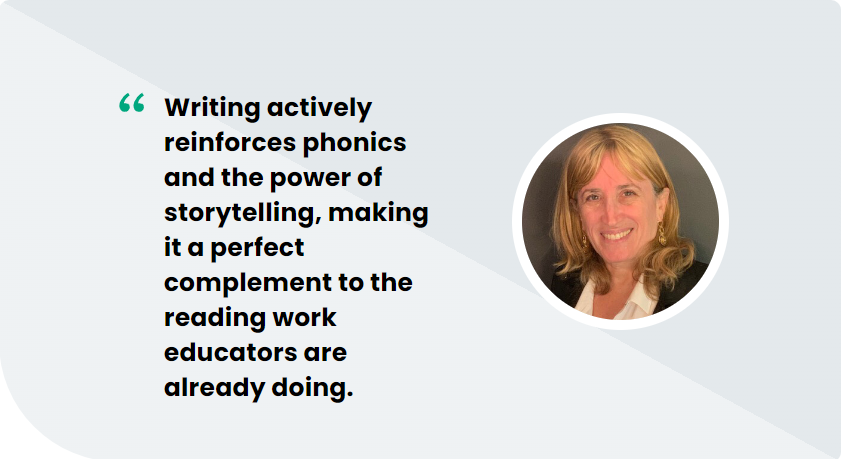

While disputes over the best ways to teach reading remain in the headlines, students are still struggling to achieve academic literacy. These debates have raged on for decades, but too often fail to include one key ingredient for truly and finally unlocking multifaceted literacy: the teaching of writing.
Significant drops in reading scores across demographic groups haunt school districts in every state. Nationally, the average reading test score for 13-year-olds has dipped to its lowest in decades. Low literacy levels are correlated with greater chances of dropping out of school entirely, lower overall wages earned throughout one’s lifetime, poorer health, and reduced connection to one’s larger community. Our young people deserve so much more. To address these challenges, we must increase access to authentic, purposeful writing instruction at all ages.
Writing Strategies to Boost Reading
Every child learns differently, and reading can be a highly nuanced and personal practice requiring teachers to apply an array of strategies. Explicit phonics instruction definitively helps many students advance their reading skills, but others will also need more help actively comprehending as they read, linking ideas, and thinking critically. Still others will need help reading with greater stamina or in new genres. Some students need explicit decoding strategies when they come across an unknown word, and others need the confidence to employ those strategies in a variety of contexts. All students need more help tapping into the serious joy of reading—finding engaging stories that speak to their own experiences and spark their imaginations.
Writing skills can amplify these aspects of reading and help tailor instruction to each student’s needs. While phonics is a foundational tool for improving reading abilities, it’s often viewed solely through the lens of reading. However, I believe that reading is like breathing in, and writing is like breathing out. Writing actively reinforces phonics and the power of storytelling, making it a perfect complement to the reading work educators are already doing.
In my work for many decades as a literacy educator, creator of many programs to motivate uncertain readers, and lifelong teacher, I’ve used decodable model texts in a variety of ways to help students build essential writing and storytelling skills. These texts can serve not only as learn-to-read models, but also as guides for students’ writing: for authorship and idea development, and even handwriting practice (yes, handwriting!). In these ways, I am strengthening my students’ opportunities to take an active role not only as readers but as writers, too.
Here are three essential overarching strategies to improve reading skills by teaching writing skills:
1.Tap Into the Power of Students’ Personal Stories
Our students are steeped in stories from the moment they wake up to the moment they fall asleep, and the most important stories to them are their own. Their minds are filled with stories about their families and friends, their cultures and passions, their likes and dislikes, and so much more. These stories are growing and developing as they are growing and developing.
We can help them take ownership of their stories and gain the skills and confidence they need to share them with others. Harnessing their natural inclination for storytelling starts by encouraging them to engage with their own stories in fun and welcoming ways, including through writing. As a result, they will learn to see the world of print language not just as something they passively receive but also as a way they and other people tell their stories.
Give students engaging writing prompts based on the books you read together in class that draw on their own unique experiences. For example, if a story character exhibits bravery, ask students to write about a time they were brave. Play with genre by asking students to write a poem or an editorial about that same experience. If a book discusses tradition and food, invite students to write stories about their family traditions and favorite foods, sharing these stories with peers to foster connections.
If we as educators tap into the deep well of stories within each child, the power of these stories and our students' excitement to share them will fuel their writing practice naturally. It will motivate them to want to put those first marks on the page. Those marks are the first sign of phonics in action—of the child as a storyteller who understands that language conveys stories.
2.Pair Sounds and Letter Practice with Authentic Storytelling
Help students see the reading-writing connection more actively by combining sounds and letter practice with meaning-making to bring the teaching of phonics to life. Invite students to identify sounds and letters by clapping, moving, and engaging in the real rhythms of language using their own stories. Then, have students listen for those same sounds in read-alouds, combining phonics practice with a narrative they can follow.
Ask students to listen and pay attention to the sounds of words and use their growing knowledge of phonics-based work to extend their writing on the page or screen. Help them see that listening for language and adapting it to the written word is a key feature of becoming a lifelong writer. Work together on stretching sounds and using the alphabet to imprint meaning on their pages. The more we engage students as writers in exploring word construction, the more attuned they’ll become to these features as readers.
For example, an emerging writer may want to write a story about going to the park with her grandmother. If the student wants to write the word “park,” speak aloud the word “park” together, emphasizing the /p/ sound. Then, prompt the child to remember the letter that makes the /p/ sound.
The interplay between phonics and writing is deep and meaningful for the child as we seek to make connections between the sounds they hear and the meaning they make. In this way, when the child rereads her writing, even while seeing scribbles like, “I WNT TO THE PRK WITHWTH MY GRNDMA,” the writing is attached to the sounds she is celebrating as a meaning maker.
3.Practice Fluency with a Classroom Writer’s Corner
Fluency in writing is all about automaticity, expression, and accuracy. When young students are comfortable jumping into writing projects without fear or anxiety, they will become stronger readers and communicators.
Giving students space to write in a variety of genres and formats can be transformational for students’ writing and reading success, helping them see the literary process as a delightful, low-stakes way to express themselves. Offer open-ended writing prompts, or invite students to write a poem, comic book, or football playbook. Multilingual students should be invited to write in the language of their choice or use pictures to tell stories. Provide different types of paper and writing utensils for your writer’s corner, like paper that looks like scrolls for poetry or newspaper for articles.
You can also gently encourage students to make their writing better. Include a “super writer” checklist for students to edit their own stories, or feature alphabet charts and alphabet manipulatives where children can actively practice making words and letters. Writing by hand is proven to help children develop lifelong reading and writing skills. In the age of screens, we need to keep this practice alive in our classrooms to build true fluency in both reading and writing.
You will soon find that your classroom writer’s corner has become an honored space for writing magic that propels your students forward on their lifelong literacy journeys.
Reading Is Breathing In, Writing Is Breathing Out
With these writing strategies, we can inspire our students to become lifelong readers too. We can inspire them to tap into the power of storytelling with their own stories, build both reading and writing skills through practice pairing sounds and letters, and create physical spaces for our students to feel safe and comfortable writing to develop fluency. By leveraging these writing strategies, we are doing legacy work: equipping our students with the inhale and exhale of literacy, empowering them for a lifetime.